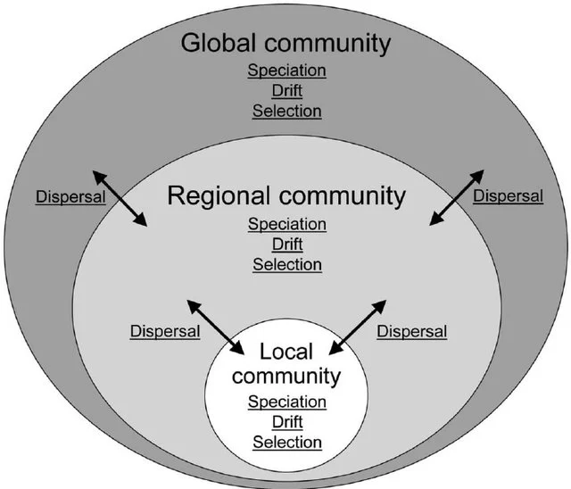
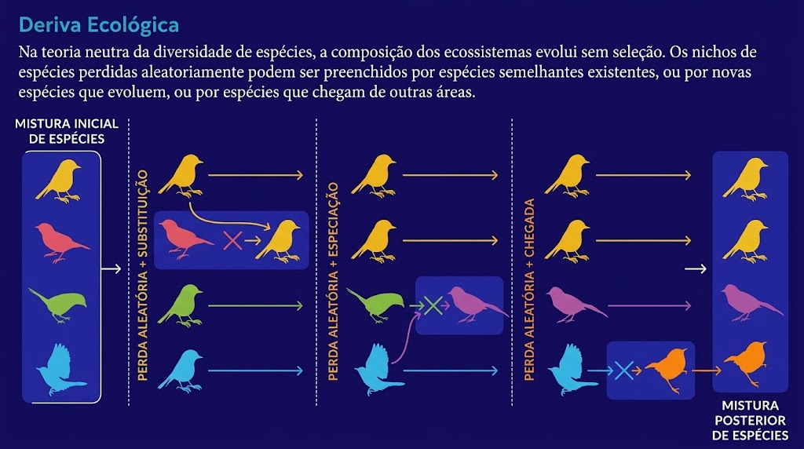
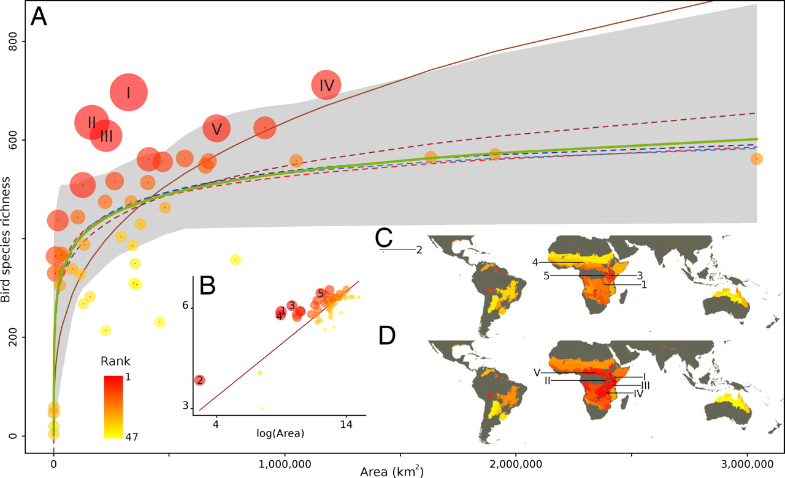
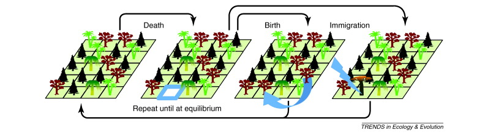
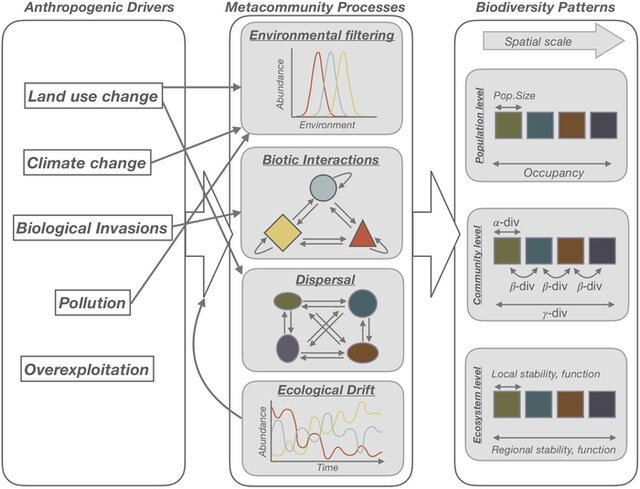

Bases Teóricas para o estudo de Comunidades Ecológicas
O que é uma Comunidade Ecológica?
- Conjunto de populações de diferentes espécies que coexistem em um local e tempo
- Interagem entre si e com o ambiente
- Apresentam estrutura e organização próprias
- São dinâmicas: mudam ao longo do tempo e espaço

Por que Comparar Comunidades?
- Avaliar impactos ambientais e perturbações
- Monitorar mudanças ao longo do tempo
- Comparar habitats distintos
- Entender padrões de biodiversidade
- Embasar decisões de conservação

A Ecologia é uma “Bagunça”
- Na genética de populações:
- Seleção — mudanças nas frequências alélicas
- Deriva — mudanças estocásticas
- Mutação — fonte de nova variação
- Fluxo gênico — entrada/saída de alelos
- Vellend (2010) propõe uma síntese unificada da disciplina
Os 4 Processos de Vellend (2010)
| Ecologia de Comunidades | Genética de Populações |
|---|---|
| Seleção | Seleção |
| Deriva | Deriva genética |
| Especiação | Mutação |
| Dispersão | Fluxo gênico |
- Esses processos não são excludentes — interagem continuamente
- A teoria geral: espécies entram via especiação e dispersão; abundâncias relativas são moldadas por deriva e seleção

Processo 1: Seleção
- Definição: diferenças determinísticas de fitness
- Três formas principais:
- Seleção constante: uma espécie sempre “ganha”
- Seleção dependente da densidade : favorece coexistência estável
- Seleção variável no espaço/tempo: permite coexistência via trade-offs
Processo 1: Seleção


Processo 2: Deriva Ecológica (Drift)
- Definição: mudanças estocásticas nas abundâncias relativas das espécies
- Hubbell (2001): Teoria Neutra Unificada — bases da deriva ecológica
- Importância da deriva aumenta quando:
- Comunidades são pequenas
- Diferenças de fitness entre espécies são fracas
- Distúrbios reduzem o tamanho da comunidade
Processo 2: Deriva Ecológica (Drift)

Processo 3: Especiação
- Definição: criação de novas espécies
- Equivale à mutação na genética de populações
- Determina o pool regional de espécies (Div Gama)
- Hipótese do pool de espécies (Taylor et al. 1990): habitats mais antigos geram mais espécies adaptadas a eles
- Padrões que dependem de especiação:
- Beta Diversidade entre regiões com condições similares
- Gradientes de diversidade com altitude, latitude ou produtividade
Processo 3: Especiação
Processo 4: Dispersão
- Definição: movimento de organismos no espaço
- Equivale ao fluxo gênico na genética de populações
- Conecta comunidades locais → metacomunidades
- Efeitos da dispersão dependem de sua interação com seleção e deriva:
- Dispersão baixa: deriva domina → comunidades divergem
- Dispersão moderada: riqueza local é maximizada
- Dispersão alta: competidores superiores dominam globalmente → riqueza cai
Processo 4: Dispersão
Interações entre os 4 Processos
- Seleção + Deriva: resultados determinísticos com ruído estocástico
- Deriva + Dispersão: Teoria da Biogeografia de Ilhas (MacArthur & Wilson 1967)
- Deriva + Dispersão + Especiação: Teoria Neutra de Hubbell (2001)
- Seleção + Dispersão: metacomunidades com species sorting e mass effects
- Todos os 4: teoria geral de comunidades (Vellend 2010)
Padrões em Comunidades: A “Caixa Preta”
- Os 4 processos geram padrões amplamente estudados:
- Relação espécies-área
- Distribuição de abundâncias relativas
- Gradiente latitudinal de diversidade
- Relação diversidade-distância (decaimento de similaridade)
- Relações diversidade-produtividade e diversidade-distúrbio
Exemplos
- Problema central: a maioria dos padrões tem múltiplas explicações possíveis
- Exemplo: relação espécies-área pode ser explicada por deriva (extinção menor em ilhas grandes), dispersão (maior área = maior alvo), seleção (maior heterogeneidade ambiental) e especiação (mais oportunidades em ilhas grandes)
Espécie-Área

Teoria Neutra de Hubbell (2001)
- Caso especial: apenas Deriva + Dispersão + Especiação (sem seleção)
- Pressuposto: todos os indivíduos são ecologicamente equivalentes (neutralidade)
- Comunidade local determinada por:
- Tamanho da metacomunidade (JM)
- Taxa de especiação (ν)
- Taxa de dispersão (m)
- Contribuição: formalizou a deriva como processo legítimo, não apenas “ruído”
Teoria Neutra de Hubbell (2001)

Metacomunidades: Dispersão como Eixo Central
- Metacomunidade: conjunto de comunidades locais conectadas por dispersão
- Neutralidade: deriva + dispersão (sem seleção)
- Dinâmica de patches: trade-off colonização-competição
- Filtros: seleção filtra espécies por gradiente ambiental
- Efeitos de massa: dispersão mantém espécies em habitats desfavoráveis
- Diversidade beta é a assinatura espacial das metacomunidades
Metacomunidades: Dispersão como Eixo Central

Resumo
- A ecologia de comunidades tem uma teoria geral
- Os 4 processos são concomitantes
- A teoria geral ecoa a Síntese Moderna da biologia evolutiva
- Padrões têm múltiplas causas — isso não é fraqueza da ecologia, é sua natureza